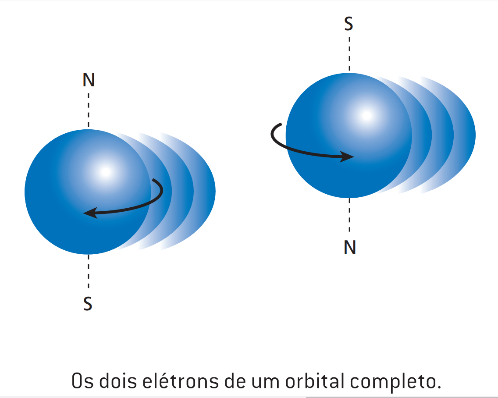
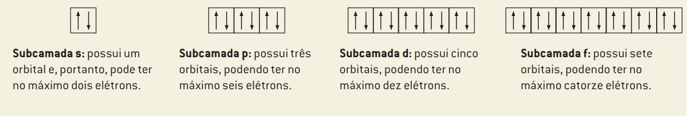

A explicação da origem é a seguinte, se você pegar uma placa sólida de metal você encontra diversos átomos como esse representado na figura acima.
Podemos observar que existem elétrons (bolinhas cinzas) orbitando ao redor do núcleo, eles podem ser encarados como pequenos circuitos elétricos, que possuem uma corrente elétrica de baixa intensidade, assim gerando um campo magnético. Por conta de os elétrons estarem em movimento, eles vão gerar um momento magnético que por consequência vão gerar a magnetização.
A explicação do momento magnético está juntamente da próxima pergunta.
Os momentos magnéticos surgem de duas formas, através do momento angular orbital e o momento angular spin.
O momento angular orbital basicamente, como o próprio nome diz, o elétron cria uma orbita envolta do núcleo gerando um momento magnético.

E no momento angular spin o elétron gira em torno de um eixo, onde o sentido da direção de rotação do momento magnético é o mesmo do próprio eixo.

As orbitas são regiões da eletrosfera, de diversas formas geométricas, em que há maior probabilidade de se encontrarem elétrons.
As subcamadas são designadas por letras diferentes, sendo elas: s, p, d e f.
Com as subcamadas conseguimos formar assim as camadas eletrônicas de um átomo onde elétrons pertencentes a uma determinada camada encontram-se à mesma distância média do núcleo. Irei demonstrar elas com um diagrama de Linus Pauling:

Certos materiais apresentam um momento magnético permanente na ausência de um campo externo, que se imantam consideravelmente quando submetidos a um campo magnético. Além disso, esses materiais são fortemente atraídos pelos ímãs. Nesses materiais existem campos magnéticos relativamente grandes por conta da presença de elétrons sozinhos em orbitais incompletas.
É nos aglomerados de átomos onde forças interatômicas exercem, os obrigando a ficarem se manterem paralelos e concordantes, formando os domínios magnéticos.

O ponto Curie é basicamente a temperatura onde o material deixa de ser um ferromagnético por conta da agitação térmica, causando a desmagnetização dos domínios magnéticos.
A permeabilidade relativa (µr), é o resultado entre a divisão da permeabilidade absoluta do material (µ) entre a permeabilidade do vácuo. (µ0)

É basicamente uma barra de ferro doce envolvida com um fio de cobre esmaltado. É passado energia pelo fio de cobre no qual a barra de ferro imanta-se na presença do campo gerado, se tornando um eletroímã.